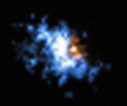

历史上，很多女性科学家都做出了杰出的贡献。艾米·诺特（Emmy Noether）无疑是特别的。在她所处的年代，爱因斯坦说：“她是数学史上最伟大的女性”……
欧拉方程是一种理想化的对流体运动的数学描述，它们在一定的假设范围内，模拟流体的运动。更确切地说，欧拉方程描述了流体中无穷小的粒子的瞬时运动。这个描述包括一个粒子的速度和它的涡量（即旋转的速度和方向）。总的来说，这些信息汇聚成了一个“速度场”，描绘了流体在给定时刻的运动情况。欧拉方程从一个初始速度场开始，预测它在未来每一刻会发生的变化……
Elgindi的结果完全改变了数学家看待欧拉方程的方式。在此之前，数学家从来没有证明过，在没有边界的情况下，欧拉方程只在短时间内有效，而不是永远有效。在这场漫长的寻找欧拉方程中的“弱点”的拉锯战中，终于有一位数学家作出了突破。
一个被普遍接受的观点认为，冰之所以滑是因为在冰的表面形成了一层液态水，这层液态水可以起到润滑作用。根据这种说法，这意味着当我们在冰场上滑冰时，滑冰鞋和冰之间会形成一层融水薄膜。
为了解答这个问题，研究人员设计了一个巧妙实验，他们研发了一种新的力测量仪，帮助他们从微观角度探讨了冰为什么滑，让他们对冰的摩擦系数，以及中间的润滑层的属性进行了测量。这项研究还解释了为什么滑冰会有如此特殊的润滑现象。他们发现，润滑摩擦和伴随而来的磨损常常导致在两个摩擦物体之间形成一层不同的材料，我们可以称这种材料为第三物体……
在距离地球4200光年的金牛座方向上，有一个三星系统，它的编号是PSR J0337+1715。在这个系统中，有一对奇异的“情侣”：一颗是质量为太阳的1.4倍、大小却与阿姆斯特丹近似的中子星，另一颗是质量只有太阳的0.2倍、大小却与地球相似的白矮星，它们每1.6天会绕着彼此运转一周。而在距离它们较远的地方，有另一颗白矮星每327天围绕着这对情侣运行一周。
研究人员通过监测这颗脉冲星发射的射电波来跟踪它的运动。结合持续六年监测的观测结果，天体物理学家仔细地模拟了这对情侣的轨道。他们测量了一个名为Delta的参数，它描述的是白矮星和质量更大的脉冲星的加速度之间的分数差异。如果广义相对论是对的，那么Delta应该等于零。观测结果表明，在测量允许的不确定性范围内，这两个加速度之间差异确实在统计上与零一致。Delta小于0.0000026的可信度为95%。
还记得热传递的3种方式吗？在物理课本上，除了热辐射，热传导、热对流这两种通过声子传热的方式，都无法在真空中发生。但在量子物理学家看来，真空并不是一片真正的“虚空”，而是充满了量子涨落。一项近期发表于《自然》杂志的实验就首次证明，量子效应可以让声子在真空中传递热量。终于，一种全新的热传递方式被找到了。
根据量子力学的观点，宇宙在本质上就是模糊的。打个比方来说，竭尽所能，你也无法同时确定一个亚原子粒子在某一时刻的动量和位置。这种不确定性的后果就是，真空永远不完全是空的，而是充斥着量子涨落——也就是所谓的“虚粒子”的不断出现和消失。
为了理解声子如何通过量子涨落传热，让我们假设真空中有两个分开放置且温度不同的物体。高温物体中的声子可以将热量传给真空中的虚粒子，然后这些虚粒子又将热量传给低温物体。如果我们将两个物体都视为振动的原子的集合体的话，那么虚粒子就像一根弹簧，将一个物体的振动传给另外一个。
在广义相对论中，空间和时间被编织成统一的时空结构，这是支撑我们所处宇宙的四维舞台，这个时空是连续的，意味着任何地方都没有空隙，一切都是光滑的，然而时空不仅仅为我们提供了“表演的舞台”，它同时也是一个玩家：时空的弯曲和变形给了我们引力的体验。
在另一个角落，量子力学控制着宇宙中那些极微小事物之间的相互作用。量子力学基于这样一种观点，那就是我们日常生活中的大部分体验并不是平滑、连续的，而是块状的，换句话说，是量子化的。物质的能量、动量、自旋和其他许多性质都被分割成了离散的小块。因此，我们对宇宙的想象有一部分是平滑的，另一部分则是块状的。当涉及时空本身的时候，我们很容易将量子力学的概念延伸至其逻辑结论，并裁定空间和时间是离散的：现实的结构划分就像电脑屏幕上的像素，我们经验中光滑、连续的运动其实只不过是一个最微小尺度的网格离散像素……
在浩瀚的宇宙花园中，其中最重的黑洞也是从小小的“种子”长大而成。通过吞噬气体星尘或和其他致密物体的融合，这些种子黑洞在体积和质量上不断增长，直到形成星系的中心，就比如我们生存的银河系。但与真实的植物不同，这些巨大黑洞的种子也是黑洞，但至今没有人发现这些“种子”黑洞。一种观点是认为，相当于数十万至数十亿太阳质量的超大黑洞，是由一个个从未被发现的“中等质量黑洞”成长而来的。这些中等质量的黑洞大约相当于100~10000个太阳的质量之和。
黑洞是宇宙中密度极高的物体，任何光线都无法从中逃逸出来。当物质落入黑洞中，便无路可逃。而且黑洞吞噬的物质越多，它的质量和体积就越大。最小的黑洞的质量大约为1到100倍的太阳质量，它们通过恒星剧烈爆炸形成，这一过程也称为超新星爆发……
历史上，很多女性科学家都做出了杰出的贡献。艾米·诺特（Emmy Noether）无疑是特别的。在她所处的年代，爱因斯坦说：“她是数学史上最伟大的女性”……
2000年9月，在金星引力的拖曳下，帕克太阳探测器进入一个以太阳为焦点、偏心率很大的椭圆轨道，目前其轨道周期147天，近日点距离太阳35.7倍太阳半径……

中国国家天文台依托郭守敬望远镜(LAMOST),发现了一颗质量为68倍太阳质量的黑洞，这也是迄今为止发现的最大的恒星级黑洞。郭守敬望远镜是在贵州的"大锅"FAST建成之前，中国最具影响力的天文望远镜之一……
近日发表在PLoS One上的研究测试了一种新型面料。研究人员向传统的氯丁橡胶潜水服中添加了两种超高分子量的聚乙烯后，获得了这种新面料……
光热疗法是一种新兴的癌症治疗方法，它通过用红外激光束照射患处的纳米微粒，从而产生热量，烧灼特定的细胞团。在此过程中，局部的温度必须得到很好的控制……
几个世纪以来，地质学家一直依靠地震仪测量地面晃动的程度，来评估地震的规模和严重程度。而GPS接收器能跟踪发生在更慢尺度上的地质过程……
 |
他们什么都没有做，却遭受了最严重的损失 2019-11-22 10:31:36 | 带你飞的科学探索 | brilliant 今年全人类对抗气候变化的脚步似乎有所停滞…… |
 |
邓宏魁入选《自然》年度十大人物 2019-11-22 10:31:36 | 带你飞的科学探索 | brilliant 《自然》杂志发布了2019年影响世界的十大科学人…… |
| 患上普通感冒的人能获得抵抗流感能力 2019-11-22 10:31:36 | 带你飞的科学探索 | brilliant 研究指出，感染了普通感冒的人将更难患上流行…… |
|
| 毕生研究天花病毒的人，却险些让天花疫情再次暴发 2019-11-22 10:31:36 | 带你飞的科学探索 | brilliant 早在公元前1145年就有天花疾病杀死埃及法老的记…… |
|
| 南极发现地球大陆的最低点 2019-11-22 10:31:36 | 带你飞的科学探索 | brilliant 新的地形图中发现了地球大陆的最低点，它位于海平面以下3.5千米，在南极洲东部登曼冰川下的峡谷底部…… |
银河系中心不止一个黑洞？ 2019-11-22 10:31:36 | 带你飞的科学探索 | brilliant 隐藏在银河系中心的超大质量黑洞名为SgrA*，其质量大约是太阳的400万倍。黑洞是太空中引力强到无论是粒子还是光线都无法逃脱的地方…… |
|  | 科学家观察到超大质量黑洞周围的气体晕 2019-11-22 10:31:36 | 带你飞的科学探索 | brilliant 科学家利用欧洲极大望远镜和MUSE仪器，在12个类星体中观察到了从中心超大质量黑洞向外延伸的气体晕。…… |
 |
麦克斯韦电磁理论延伸到纳米尺度 2019-11-22 10:31:36 | 带你飞的科学探索 | brilliant 一篇发表于《自然》的论文将电磁理论延伸到了纳米尺度，其实用性已经经过了纳米共振器的实验验证…… |
| 宇宙的一切都源自“扭曲”的过程 2019-11-22 10:31:36 | 带你飞的科学探索 | brilliant 138亿年前，宇宙大爆炸拉开了宇宙演化的序幕。而在此之前，是一个短暂但更具爆发性的阶段：宇宙暴胀…… |
|
| 宇宙中磁性最强的天体又起新争议 2019-11-22 10:31:36 | 带你飞的科学探索 | brilliant 高度磁化的中子星会释放出无可估量的X射线和伽马射线，它们就是磁星…… |
|
| 旅行者2号” 传回星际穿越的首批数据 2019-11-22 10:31:36 | 带你飞的科学探索 | brilliant 本周，《自然-天文学》杂志的一系列论文报道了“旅行者2号”穿过星际空间的首批数据…… |
宇宙，可能不是无边无际的 2019-11-22 10:31:36 | 带你飞的科学探索 | brilliant 一项最新研究通过对普朗克卫星的数据分析指出，宇宙可能是一个封闭的三维球面。这推翻了近年来的主流观点，即宇宙是无边无际的平坦三维空间…… |